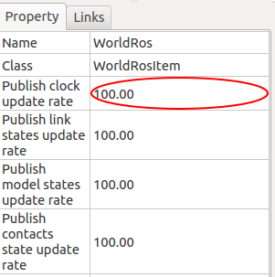
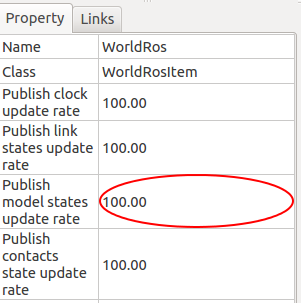
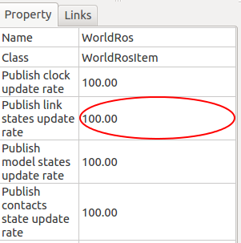
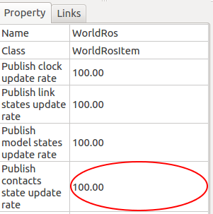

Choreonoid ROSプラグインマニュアル¶
実行¶
ROSプラグインが有効になったChoreonoidを実行するためには、以下のコマンドを入力します。
$ roscore (on the different terminal)
$ choreonoid
順動力学モードもしくは、ハイゲインモードに設定したAISTSimulatorアイテムを配置し、World アイテム下に WorldRos アイテムを、制御対象とするロボットの Body アイテム下に BodyRos アイテムを配置する必要があります。
また、順動力学モードの場合 BodyRosTorqueController アイテムを、ハイゲインモードの場合 BodyRosHighgainController アイテムを配置する必要があります。
詳しくは Choreonoid ROSプラグインチュートリアル を参照してください。
注釈
現在、simulation time モードはサポートしています。
しかしながら、wall-clock time (実時間) モードについては未サポートとなっています。
申し訳ありませんが、simulation time モードを使用してください。
simulation time モードの詳細については http://wiki.ros.org/Clock を参照してください。
機能比較¶
この節では choreonoid_ros_pkg と gazebo_ros_pkgs の機能比較を記載します。
choreonoid_ros_pkg は gazebo_ros_pkgs と互換性があるように実装しているため、原則として同じ機能を提供することになります。
ただし、シミュレータの違いにより差異が生じている場合があります。 また、まだ実装されていない機能もあります。
これらについて以下に記載します。
Gazebo Subscribed Topics¶
| Category | gazebo_ros_pkgs | choreonoid_ros_pkg |
|---|---|---|
| topic | /gazebo/set_link_state | 未実装 |
| topic | /gazebo/set_model_state | 未実装 |
Gazebo Published Parameters¶
| Category | gazebo_ros_pkgs | choreonoid_ros_pkg |
|---|---|---|
| parameter | /use_sim_time | /use_sim_time [1] |
| topic | /gazebo/parameter_descriptions | 未実装 |
| topic | /gazebo/parameter_updates | 未実装 |
Gazebo Published Topics¶
| Category | gazebo_ros_pkgs | choreonoid_ros_pkg |
|---|---|---|
| topic | /clock | /clock |
| topic | /gazebo/link_states | /choreonoid/link_states |
| topic | /gazebo/model_states | /choreonoid/model_states |
| topic | /choreonoid/[world name]/physics/contacts [2] |
Gazebo Services¶
| Category | gazebo_ros_pkgs | choreonoid_ros_pkg |
|---|---|---|
| service | /gazebo/spawn_gazebo_model [3] | 未実装 |
| service | /gazebo/spawn_sdf_model | /choreonoid/spawn_sdf_model [4] |
| service | /gazebo/spawn_urdf_model | /choreonoid/spawn_urdf_model [4] |
| service | /choreonoid/spawn_vrml_model [2] [4] | |
| service | /gazebo/delete_model | /choreonoid/delete_model |
State and properties getters¶
| Category | gazebo_ros_pkgs | choreonoid_ros_pkg |
|---|---|---|
| service | /gazebo/get_joint_properties | 未実装 |
| service | /gazebo/get_link_properties | 未実装 |
| service | /gazebo/get_link_state | 未実装 |
| service | /gazebo/get_loggers | 未実装 |
| service | /gazebo/get_model_properties | 未実装 |
| service | /gazebo/get_model_state | 未実装 |
| service | /gazebo/get_physics_properties | 未実装 |
| service | /gazebo/get_world_properties | 未実装 |
State and properties setters¶
| Category | gazebo_ros_pkgs | choreonoid_ros_pkg |
|---|---|---|
| service | /gazebo/set_joint_properties | 未実装 |
| service | /gazebo/set_link_properties | 未実装 |
| service | /gazebo/set_link_state | 未実装 |
| service | /gazebo/set_logger_level | 未実装 |
| service | /gazebo/set_model_configuration | 未実装 |
| service | /gazebo/set_model_state | 未実装 |
| service | /gazebo/set_parameters | 未実装 |
| service | /gazebo/set_physics_properties | 未実装 |
Simulation control¶
| Category | gazebo_ros_pkgs | choreonoid_ros_pkg |
|---|---|---|
| service | /gazebo/pause_physics | /choreonoid/pause_physics [5] |
| service | /gazebo/unpause_physics | /choreonoid/unpause_physics [5] |
| service | /gazebo/reset_simulation | /choreonoid/reset_simulation [5] |
| service | /gazebo/reset_world | 未実装 |
Force control¶
| Category | gazebo_ros_pkgs | choreonoid_ros_pkg |
|---|---|---|
| service | /gazebo/apply_body_wrench | 未実装 |
| service | /gazebo/apply_joint_effort | 未実装 |
| service | /gazebo/clear_joint_forces | 未実装 |
| service | /gazebo/clear_body_wrenches | 未実装 |
| [1] | 実時間モード (use_sim_time=false) は現在サポートしていません。 |
| [2] | (1, 2) この機能は choreonoid_ros_pkg 独自の機能です。 |
| [3] | この機能は廃止されており、 替わりに’spawn_sdf_model’を使用します。 |
| [4] | (1, 2, 3) Choreonoid の仕様上の制限により、ロードしたモデルの物理干渉が発生しません。 |
| [5] | (1, 2, 3) Choreonoid の GUI による操作との整合性がありません。 |
トピックとサービスの詳細については、次節以降に記載します。
ROSトピックス¶
Choreonoid ROSプラグインは以下のROSトピックを出力します。実際の利用方法は Choreonoid ROSプラグインチュートリアル を参照してください。
注釈
データ型が sensor_msgs および geometry_msgs のトピックは、BodyRos アイテムが提供します。
データ型が trajectory_msgs のトピックは、BodyRosTorqueContorller もしくは BodyRosHighgainController アイテムが提供します。
上記以外については WorldRos アイテムが提供します。
/[robotname]/joint_states¶
ロボットの各関節の情報は/[robotname]/joint_statesトピックにpublishします。
joint_statesトピックのデータ型は sensor_msgs::JointState です。
/[robotname]/[controlmode]/set_joint_trajectory¶
ロボットへの制御信号は/[robotname]/[controlmode]/set_joint_trajectoryトピックへ送ります。[controlmode]は、RosBodyTorqueController アイテムの場合 torque_control、BodyRosHighgainController アイテムの場合 highgain_control となります。
set_joint_trajectoryトピックのデータ型は trajectory_msgs::JointTrajectory です。
/[robotname]/[sensorname]¶
ロボットモデルにセンサが定義されている場合、ROSプラグインは各センサに対応したトピックを生成します。
力センサからの出力は geometry_msgs::Wrench のデータ型を使ってpublishします。
ジャイロセンサからの出力は sensor_msgs::Imu のデータ型を使ってpublishします。
加速度センサからの出力は geometry_msgs::Accel のデータ型を使ってpublishします。
レンジセンサからの出力は sensor_msgs::LaserScan のデータ型を使ってpublishします。
画像センサからの出力はImage Transportを使ってpublishします。
RGBDセンサについては、デプス画像を sensor_msgs::PointCloud2 のデータ 型でpublishします。
/clock¶
現在のシミュレーション時刻を/clockトピックにpublishします。
トピックの publish 間隔 (Hz) はユーザにより指定する事ができます。
publish 間隔のデフォルト値は 100.0 Hz です。
/choreonoid/model_states¶
このトピックには各モデルの現在の位置姿勢をpublishします。
トピックの publish 間隔 (Hz) はユーザにより指定する事ができます。
publish 間隔のデフォルト値は 100.0 Hz です。
/choreonoid/links_states¶
このトピックには各モデルの各リンクの現在の位置姿勢をpublishします。
トピックの publish 間隔 (Hz) はユーザにより指定する事ができます。
publish 間隔のデフォルト値は 100.0 Hz です。
/choreonoid/[worldname]/physics/contacts¶
このトピックには接触が発生しているリンクの状態を publish します。
出力は gazebo_msgs::ContactState のデータ型で publish します。
トピックの各パラメータについて以下に記載します。
info:
シミュレーションのワールド名と接触が発生した時間 (シミュレーション内時間) を出力します。
collision1_name:
collision2_name:
接触があったリンク名を出力します。出力フォーマットは ‘<body name>::<link name>::collision’ です。
wrenches:
接触位置に発生した力とトルクを出力します。出力は collision1_name の重心軸回りの値となります。力とトルクと接触位置との関係は配列の位置で関連付けられています。
total_wrench:
力とトルクの合計を出力します。
contact_positions:
接触位置をワールド座標系で出力します。
contact_normals:
接触位置の法線ベクトルを出力します。

接触位置の法線ベクトルと接触位置との関係は、配列の位置で関連付けられています。
depths:
接触深度を出力します。接触深度と接触位置の関係は、配列の位置で関連付けられています。
トピックの publish 間隔 (Hz) はユーザにより指定する事ができます。
publish 間隔のデフォルト値は 100.0 Hz です。
ROSサービス¶
シミュレーションを制御するために以下のROSサービスが利用できます。
注釈
サービスは全て WorldRos アイテムが提供します。
/choreonoid/pause_physics¶
引数なし。シミュレーションを一時停止します。
/choreonoid/unpause_physics¶
引数なし。一時停止したシミュレーションを再開します。
/choreonoid/spawn_vrml_model¶
[model_name, model_data, namespace, pose, reference_frame]を引数にとります。指定されたモデルをシミュレータにロードします。
/choreonoid/delete_model¶
[model_name]を引数にとります。指定されたモデルをシミュレータから消去します。